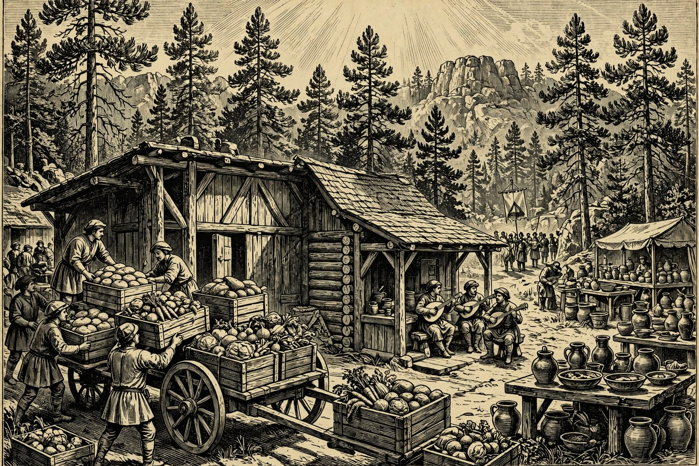

PAYSON — Hail, wayfarer, and a bright Morndas to you — morning light is spilling over the Rim, the pines stand still in clear air, and a kind week is opening in every Hold. Here at home a brand-new Neighbor’s Pantry food distribution rolls out at the Payson Warming Center this morning, Pine lifts its voice at open mic tonight, and by Wednesday the Holds turn out in full thanks for Veterans Day in Prescott, Sedona, and Camp Verde. Add a free documentary screening in Show Low, sourdough in Prescott, and warm hand pies up the road in Strawberry, and there is good cheer enough for the whole road, by the Nine.
Happening in the Holds Today
 Payson— Payson Food Distribution — Neighbor’s Pantry Launch — Payson Warming Center, 601 AZ-260, today 9:00–11:00 AM. A brand-new monthly mobile food distribution from United Food Bank and Mercy Care kicks off this morning, drive-thru style, so empty the trunk before you come and no walk-ups, please. Volunteers will load fresh produce, pantry staples, and bakery goods at no cost. It is open to the public and aimed at neighbors in need — a fine, practical piece of good news to start the week. Arrive early in the window while the crates are full.
Payson— Payson Food Distribution — Neighbor’s Pantry Launch — Payson Warming Center, 601 AZ-260, today 9:00–11:00 AM. A brand-new monthly mobile food distribution from United Food Bank and Mercy Care kicks off this morning, drive-thru style, so empty the trunk before you come and no walk-ups, please. Volunteers will load fresh produce, pantry staples, and bakery goods at no cost. It is open to the public and aimed at neighbors in need — a fine, practical piece of good news to start the week. Arrive early in the window while the crates are full. Pine-Strawberry— Open Mic Night: Music with a Purpose — THAT Brewery & Pub, 3270 N Highway 87, Pine, today at 4:00 PM. Open mic returns to the pub in the pines, hosted this season by rotating members of the Pine-Strawberry Fuel Reduction crew, where community, music, and giving back come together. Local singers, pickers, and brave first-timers are welcome to take a turn while the crowd listens kindly. It is a relaxed Monday-evening stop for Hearth guests. Good pours, live local voices, and a good cause behind it all.
Pine-Strawberry— Open Mic Night: Music with a Purpose — THAT Brewery & Pub, 3270 N Highway 87, Pine, today at 4:00 PM. Open mic returns to the pub in the pines, hosted this season by rotating members of the Pine-Strawberry Fuel Reduction crew, where community, music, and giving back come together. Local singers, pickers, and brave first-timers are welcome to take a turn while the crowd listens kindly. It is a relaxed Monday-evening stop for Hearth guests. Good pours, live local voices, and a good cause behind it all. Sedona— Wild Grace Retreat — In Session — Sky Ranch Lodge, Sedona, running November 8–13 and in session today. This is a registered, intimate-group retreat, not a drop-in event, billed as a joyful gathering of movement, rest, renewal, ceremony, and nourishing meals attuned to Sedona’s red-rock and vortex country. Guests already booked will find the red rocks at their calmest on a Monday. Travelers not booked should take it as a sign of the season: Sedona’s retreat weeks are in full swing. Watch for the hosts’ special 11/11 gathering later this week.
Sedona— Wild Grace Retreat — In Session — Sky Ranch Lodge, Sedona, running November 8–13 and in session today. This is a registered, intimate-group retreat, not a drop-in event, billed as a joyful gathering of movement, rest, renewal, ceremony, and nourishing meals attuned to Sedona’s red-rock and vortex country. Guests already booked will find the red rocks at their calmest on a Monday. Travelers not booked should take it as a sign of the season: Sedona’s retreat weeks are in full swing. Watch for the hosts’ special 11/11 gathering later this week. Show Low— NPC Special Screening: People of the West, Episodes 3 & 4 — Northland Pioneer College White Mountain Campus, 1001 W. Deuce of Clubs, Show Low, today 5:00–7:00 PM, free. The college’s Community Connections Subcommittee invites everyone to this special screening in its five-evening series. Episodes 3 and 4 of the ten-part documentary explore California’s history through the voices and perspectives of Indigenous peoples. Everyone is welcome and there is no cost. A thoughtful, quiet Monday-night option for guests headed to the White Mountains.
Show Low— NPC Special Screening: People of the West, Episodes 3 & 4 — Northland Pioneer College White Mountain Campus, 1001 W. Deuce of Clubs, Show Low, today 5:00–7:00 PM, free. The college’s Community Connections Subcommittee invites everyone to this special screening in its five-evening series. Episodes 3 and 4 of the ten-part documentary explore California’s history through the voices and perspectives of Indigenous peoples. Everyone is welcome and there is no cost. A thoughtful, quiet Monday-night option for guests headed to the White Mountains. Prescott— Sourdough Bread Demonstration — University of Arizona Yavapai County Cooperative Extension, Prescott, today at 10:00 AM, a two-hour session. Using pre-made dough, the guide walks through every stage: starter basics, mixing and fermenting, shaping, and baking tips with troubleshooting. It is made for home bakers who have a starter on the counter and questions to go with it. Practical, friendly food learning from the county Extension service. Bring your best starter questions and leave with a plan for the next loaf.— Stefani Savage — Live Music — Peacock Room, Hassayampa Inn, 122 E Gurley St, Prescott, today 5:00–8:00 PM. Monday nights rarely sound this nice: a local singer fills the historic inn’s Peacock Room while dinner and drinks are served around her. The setting is warm, the hour is kind, and downtown is an easy stroll before or after. Prescott lists dozens of live-music nights this week, and this is Monday’s gentle pick. A fine early-evening plan for Valley Dwellers up for the week.— Xtreme Bar Bingo — Jersey Lilly Saloon, 116 S Montezuma St, Prescott, today at 6:00 PM. Free-to-play bingo takes over the Whiskey Row saloon for Monday night, with a cash jackpot advertised up to $15,000, weekly giveaways, and deluxe prizes. All-day happy hour is part of the pitch, and the room is loud, social, and glad to see new faces. It is the merry opposite of the quiet Peacock Room set across town. Pick your pace — Prescott offers both tonight.
Prescott— Sourdough Bread Demonstration — University of Arizona Yavapai County Cooperative Extension, Prescott, today at 10:00 AM, a two-hour session. Using pre-made dough, the guide walks through every stage: starter basics, mixing and fermenting, shaping, and baking tips with troubleshooting. It is made for home bakers who have a starter on the counter and questions to go with it. Practical, friendly food learning from the county Extension service. Bring your best starter questions and leave with a plan for the next loaf.— Stefani Savage — Live Music — Peacock Room, Hassayampa Inn, 122 E Gurley St, Prescott, today 5:00–8:00 PM. Monday nights rarely sound this nice: a local singer fills the historic inn’s Peacock Room while dinner and drinks are served around her. The setting is warm, the hour is kind, and downtown is an easy stroll before or after. Prescott lists dozens of live-music nights this week, and this is Monday’s gentle pick. A fine early-evening plan for Valley Dwellers up for the week.— Xtreme Bar Bingo — Jersey Lilly Saloon, 116 S Montezuma St, Prescott, today at 6:00 PM. Free-to-play bingo takes over the Whiskey Row saloon for Monday night, with a cash jackpot advertised up to $15,000, weekly giveaways, and deluxe prizes. All-day happy hour is part of the pitch, and the room is loud, social, and glad to see new faces. It is the merry opposite of the quiet Peacock Room set across town. Pick your pace — Prescott offers both tonight.
The Days Ahead
- Tue, Nov. 10— Trail Day Volunteer Build — Highway 87, Pine, Tuesday at 7:00 AM. “Don’t just use the trail — help build it” is the call from Pine-Strawberry Fuel Reduction, inviting hikers, bikers, runners, and neighbors to continue work on the trails below the Mogollon Rim. Expect real outdoor work side by side with the community, not a guided hike. Bring work clothes, water, and a willing back. This is Rim Country looking after its own trails, one morning at a time.
- Wed, Nov. 11— Prescott Veterans Day Parade — Downtown Prescott, Wednesday, November 11. Opening ceremonies begin at 10:30 AM at Cortez and Union streets, and the parade steps off at 11:00 AM around Courthouse Square. This year’s theme is “Protecting Our Country – Serving Our Communities – Honoring Our Veteran First Responders.” It is the region’s biggest Veterans Day observance this week. Arrive early — downtown draws a large, proud crowd.— Sedona Veterans Day Tribute — Sedona Heritage Museum, 735 Jordan Road, Uptown Sedona, Wednesday 11:00 AM–1:00 PM, free. Sedona’s official observance, hosted with the City of Sedona, gathers neighbors for a flag ceremony, dignitaries, a tribute to veterans, and music in Jordan Historical Park. Free food and entertainment follow the ceremony. Every veteran and active-duty service member is invited to be honored. Open to anyone who wishes to stand and give thanks.— Veterans Day Appreciation Program — Cliff Castle Casino, Camp Verde, Wednesday 11:00 AM–12:00 noon. The Yavapai-Apache Nation and Cliff Castle Casino honor all veterans with presentation of colors, a flag folding ceremony, remarks, and an honor song. Gifts for veterans are part of the program, and the casino offers a free lunch for veterans. It is a warm, one-hour midday tribute. A fitting stop on the road between the Holds.— Payson Dentists Salute Our Veterans — 409 W Main Street, Payson, Wednesday at 9:00 AM. Local dentists offer a free basic cleaning, extraction, or filling for veterans with VA ID, with space limited, so reserve ahead. It is a practical thank-you, given chair by chair, right here at home. Veterans, call early to claim a spot. Neighbors, spread the word to a veteran who could use it.
- Thu, Nov. 12— Mingle with a Veteran — Northland Pioneer College White Mountain Campus, Learning Center Lobby, 1001 W. Deuce of Clubs, Show Low, Thursday morning. Join the college for conversation, community, and appreciation for the veterans who have served. Students, staff, and community members are all invited — this is a meet-and-talk gathering, not a formal ceremony. It is a good day-after way to sit down and hear a veteran’s story. Come with time to listen.
- Fri, Nov. 13— Verde Valley Pottery Festival — First Pick Friday — D.A. Ranch Vineyards, 1900 Dancing Apache Road, Cornville, Friday 4:00–6:00 PM, $25 early access. The festival’s fifth year opens with first choice of handmade ceramic work by Arizona potters, plus D.A. Ranch wine, local food trucks, craft beer, and live music along Oak Creek. The free festival weekend follows on Saturday and Sunday. The finest pots go to those who come Friday. Book the evening if a handmade bowl is calling your name.
- Sat, Nov. 14— Verde Valley Pottery Festival — Free Festival Day — D.A. Ranch Vineyards, Cornville, Saturday 10:00 AM–5:00 PM, free. Arizona potters show and sell their work with live demonstrations, hands-on activities, local food, estate wine, and live music across the ranch grounds. What began as a grassroots gathering in Camp Verde has grown into a regional favorite for makers and collectors. Bring a bag and a careful hand. Nobody leaves empty-handed.— Get Loud Community Celebration — Community Library Sedona, 3250 White Bear Drive, Sedona, Saturday 2:00–5:00 PM, free. Sedona’s big community party returns with an obstacle slide, inflatable maze, bungee run, and baseball speed-pitch, plus face painting and balloon animals. Free tacos, popcorn, and cotton candy are served until they run out. Park free at Red Rock High School and ride the free trolley. Last year more than 1,500 neighbors came — come be counted.
- Sun, Nov. 15— Sedona Symphony: Simple Gifts — Sedona Performing Arts Center, 995 Upper Red Rock Loop Road, Sedona, Sunday — pre-concert talk 2:00 PM, concert 3:00–5:00 PM. The Sedona Symphony’s American music celebration closes with Aaron Copland’s Appalachian Spring, built on the Shaker melody that gives the afternoon its name. Violinist Rachel Lee Priday is the featured soloist in a new concerto written for her. Tickets are sold through the Sedona Symphony. A gratitude-filled soundtrack under Sedona’s big sky.